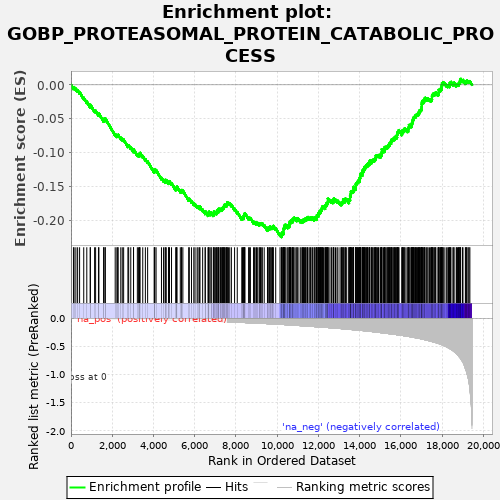
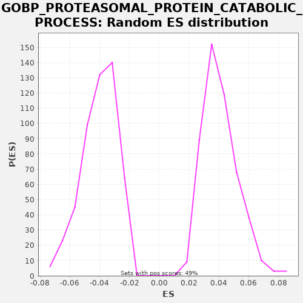

| | | Dataset | A_X_tradeoff |
| Phenotype | NoPhenotypeAvailable |
| Upregulated in class | na_neg |
| GeneSet | GOBP_PROTEASOMAL_PROTEIN_CATABOLIC_PROCESS |
| Enrichment Score (ES) | -0.22413437 |
| Normalized Enrichment Score (NES) | -5.5686445 |
| Nominal p-value | 0.0 |
| FDR q-value | 0.0 |
| FWER p-Value | 0.0 |
Table: GSEA Results Summary

Fig 1: Enrichment plot: GOBP_PROTEASOMAL_PROTEIN_CATABOLIC_PROCESS
Profile of the Running ES Score & Positions of GeneSet Members on the Rank Ordered List
| SYMBOL | RANK IN GENE LIST | RANK METRIC SCORE | RUNNING ES | CORE ENRICHMENT | | 1 | DNAJC10 | 119 | -0.001 | -0.0041 | No |
| 2 | HSPBP1 | 149 | -0.001 | -0.0034 | No |
| 3 | AQP11 | 237 | -0.001 | -0.0058 | No |
| 4 | RNFT1 | 321 | -0.002 | -0.0080 | No |
| 5 | TRIM3 | 417 | -0.002 | -0.0108 | No |
| 6 | TNFAIP1 | 618 | -0.003 | -0.0191 | No |
| 7 | RCN3 | 766 | -0.004 | -0.0247 | No |
| 8 | FOXF2 | 932 | -0.005 | -0.0312 | No |
| 9 | TAF9 | 941 | -0.005 | -0.0294 | No |
| 10 | TRIM72 | 1145 | -0.006 | -0.0379 | No |
| 11 | DNAJC18 | 1194 | -0.007 | -0.0383 | No |
| 12 | SHARPIN | 1333 | -0.007 | -0.0433 | No |
| 13 | PSMD2 | 1354 | -0.007 | -0.0422 | No |
| 14 | TMEM67 | 1586 | -0.009 | -0.0522 | No |
| 15 | SPSB2 | 1587 | -0.009 | -0.0500 | No |
| 16 | BBS7 | 1657 | -0.009 | -0.0514 | No |
| 17 | BAG2 | 1659 | -0.009 | -0.0493 | No |
| 18 | SUMO2 | 2144 | -0.012 | -0.0726 | No |
| 19 | RNF144A | 2226 | -0.012 | -0.0747 | No |
| 20 | PSMB11 | 2263 | -0.013 | -0.0744 | No |
| 21 | UBXN6 | 2287 | -0.013 | -0.0734 | No |
| 22 | PRKCG | 2415 | -0.014 | -0.0779 | No |
| 23 | FBXL12 | 2487 | -0.014 | -0.0794 | No |
| 24 | PSMD11 | 2554 | -0.014 | -0.0807 | No |
| 25 | PSMD4 | 2762 | -0.016 | -0.0894 | No |
| 26 | TRIB3 | 2798 | -0.016 | -0.0891 | No |
| 27 | PSMD6 | 2900 | -0.017 | -0.0922 | No |
| 28 | UBXN11 | 3032 | -0.017 | -0.0969 | No |
| 29 | IL33 | 3035 | -0.017 | -0.0948 | No |
| 30 | GBA | 3219 | -0.019 | -0.1023 | No |
| 31 | PINK1 | 3278 | -0.019 | -0.1031 | No |
| 32 | RNF122 | 3324 | -0.020 | -0.1033 | No |
| 33 | HFE | 3331 | -0.020 | -0.1015 | No |
| 34 | ALAD | 3348 | -0.020 | -0.1001 | No |
| 35 | ANAPC5 | 3481 | -0.021 | -0.1049 | No |
| 36 | DESI1 | 3608 | -0.021 | -0.1093 | No |
| 37 | PSMC6 | 3718 | -0.022 | -0.1129 | No |
| 38 | RNF121 | 4034 | -0.025 | -0.1273 | No |
| 39 | PSMC5 | 4058 | -0.025 | -0.1263 | No |
| 40 | USP44 | 4059 | -0.025 | -0.1241 | No |
| 41 | STYX | 4127 | -0.026 | -0.1254 | No |
| 42 | EDEM1 | 4389 | -0.028 | -0.1370 | No |
| 43 | FBXO31 | 4490 | -0.029 | -0.1401 | No |
| 44 | FBXL13 | 4571 | -0.030 | -0.1421 | No |
| 45 | WNT10B | 4572 | -0.030 | -0.1399 | No |
| 46 | FBXL7 | 4621 | -0.030 | -0.1402 | No |
| 47 | PSMB10 | 4729 | -0.031 | -0.1437 | No |
| 48 | HSPA1B | 4751 | -0.031 | -0.1426 | No |
| 49 | GIPC1 | 4779 | -0.031 | -0.1418 | No |
| 50 | SH3RF2 | 4877 | -0.032 | -0.1447 | No |
| 51 | ANAPC2 | 5080 | -0.034 | -0.1532 | No |
| 52 | ECSCR | 5113 | -0.035 | -0.1527 | No |
| 53 | UBE2U | 5125 | -0.035 | -0.1511 | No |
| 54 | LAMP3 | 5141 | -0.035 | -0.1497 | No |
| 55 | HSPA1A | 5302 | -0.037 | -0.1559 | No |
| 56 | DNAAF4 | 5355 | -0.037 | -0.1565 | No |
| 57 | DERL2 | 5366 | -0.038 | -0.1548 | No |
| 58 | UBE2S | 5427 | -0.038 | -0.1558 | No |
| 59 | FBXL2 | 5710 | -0.042 | -0.1684 | No |
| 60 | PSMD10 | 5739 | -0.042 | -0.1677 | No |
| 61 | UBAC2 | 5845 | -0.043 | -0.1711 | No |
| 62 | TTC36 | 5958 | -0.045 | -0.1748 | No |
| 63 | HECW1 | 6017 | -0.045 | -0.1756 | No |
| 64 | OS9 | 6118 | -0.047 | -0.1787 | No |
| 65 | CLU | 6165 | -0.047 | -0.1789 | No |
| 66 | ANAPC10 | 6241 | -0.048 | -0.1807 | No |
| 67 | AUP1 | 6254 | -0.048 | -0.1791 | No |
| 68 | SPSB4 | 6387 | -0.050 | -0.1839 | No |
| 69 | SEC61B | 6509 | -0.052 | -0.1881 | No |
| 70 | KLHL22 | 6514 | -0.052 | -0.1861 | No |
| 71 | DDI1 | 6646 | -0.054 | -0.1908 | No |
| 72 | KCNE2 | 6676 | -0.054 | -0.1902 | No |
| 73 | PSMC4 | 6691 | -0.054 | -0.1887 | No |
| 74 | CSNK1E | 6694 | -0.054 | -0.1866 | No |
| 75 | BTRC | 6794 | -0.055 | -0.1896 | No |
| 76 | FBXW5 | 6797 | -0.055 | -0.1876 | No |
| 77 | NR1D1 | 6903 | -0.057 | -0.1909 | No |
| 78 | PMAIP1 | 6929 | -0.058 | -0.1900 | No |
| 79 | PSMA1 | 6938 | -0.058 | -0.1883 | No |
| 80 | RNF144B | 6941 | -0.058 | -0.1862 | No |
| 81 | ARRB2 | 7017 | -0.059 | -0.1879 | No |
| 82 | RHBDF1 | 7067 | -0.059 | -0.1883 | No |
| 83 | PSME1 | 7084 | -0.059 | -0.1870 | No |
| 84 | EDEM2 | 7085 | -0.059 | -0.1848 | No |
| 85 | HECW2 | 7148 | -0.060 | -0.1859 | No |
| 86 | DDIT3 | 7164 | -0.061 | -0.1845 | No |
| 87 | ARRB1 | 7166 | -0.061 | -0.1823 | No |
| 88 | ANKZF1 | 7234 | -0.062 | -0.1837 | No |
| 89 | ANAPC11 | 7256 | -0.062 | -0.1826 | No |
| 90 | UBE2B | 7311 | -0.063 | -0.1832 | No |
| 91 | NUDT15 | 7332 | -0.063 | -0.1821 | No |
| 92 | PML | 7354 | -0.063 | -0.1810 | No |
| 93 | PSME2 | 7389 | -0.064 | -0.1806 | No |
| 94 | GET4 | 7412 | -0.064 | -0.1796 | No |
| 95 | CDC26 | 7429 | -0.065 | -0.1783 | No |
| 96 | RNF19B | 7439 | -0.065 | -0.1765 | No |
| 97 | FBXO17 | 7484 | -0.065 | -0.1767 | No |
| 98 | UBE2J1 | 7537 | -0.066 | -0.1772 | No |
| 99 | ECRG4 | 7554 | -0.066 | -0.1759 | No |
| 100 | OSBPL7 | 7576 | -0.067 | -0.1748 | No |
| 101 | NFE2L2 | 7582 | -0.067 | -0.1729 | No |
| 102 | SMURF1 | 7644 | -0.068 | -0.1739 | No |
| 103 | WFS1 | 7701 | -0.068 | -0.1746 | No |
| 104 | UBE2V2 | 7781 | -0.070 | -0.1766 | No |
| 105 | PSMD14 | 7936 | -0.072 | -0.1825 | No |
| 106 | ZFAND2B | 8066 | -0.074 | -0.1871 | No |
| 107 | RFFL | 8285 | -0.078 | -0.1964 | No |
| 108 | FBXO48 | 8320 | -0.079 | -0.1960 | No |
| 109 | CEBPA | 8352 | -0.079 | -0.1955 | No |
| 110 | SMAD7 | 8382 | -0.080 | -0.1948 | No |
| 111 | TOR1A | 8385 | -0.080 | -0.1927 | No |
| 112 | UBE2A | 8404 | -0.080 | -0.1915 | No |
| 113 | TRIM13 | 8416 | -0.080 | -0.1899 | No |
| 114 | TBL1X | 8441 | -0.081 | -0.1890 | No |
| 115 | TMUB2 | 8616 | -0.083 | -0.1959 | No |
| 116 | PSMC2 | 8655 | -0.084 | -0.1957 | No |
| 117 | DERL1 | 8704 | -0.085 | -0.1961 | No |
| 118 | POMT2 | 8856 | -0.088 | -0.2018 | No |
| 119 | RNF185 | 8899 | -0.088 | -0.2019 | No |
| 120 | FBXL19 | 8969 | -0.090 | -0.2033 | No |
| 121 | SHH | 9000 | -0.090 | -0.2027 | No |
| 122 | FBXL8 | 9057 | -0.091 | -0.2035 | No |
| 123 | VCP | 9129 | -0.092 | -0.2050 | No |
| 124 | PSMB7 | 9157 | -0.093 | -0.2042 | No |
| 125 | LRRK2 | 9194 | -0.093 | -0.2039 | No |
| 126 | CDC16 | 9231 | -0.094 | -0.2037 | No |
| 127 | PSMC3 | 9283 | -0.095 | -0.2041 | No |
| 128 | NKD2 | 9373 | -0.097 | -0.2066 | No |
| 129 | PSMC1 | 9531 | -0.099 | -0.2127 | No |
| 130 | HERPUD1 | 9536 | -0.099 | -0.2107 | No |
| 131 | PRKN | 9568 | -0.100 | -0.2102 | No |
| 132 | UGGT2 | 9623 | -0.101 | -0.2108 | No |
| 133 | FBXO27 | 9657 | -0.102 | -0.2104 | No |
| 134 | SOCS5 | 9662 | -0.102 | -0.2084 | No |
| 135 | NHLRC3 | 9734 | -0.104 | -0.2100 | No |
| 136 | RMND5B | 9775 | -0.105 | -0.2099 | No |
| 137 | DET1 | 9792 | -0.105 | -0.2085 | No |
| 138 | RHBDD1 | 9817 | -0.105 | -0.2076 | No |
| 139 | PKD1 | 9931 | -0.108 | -0.2114 | No |
| 140 | PSMA4 | 10142 | -0.112 | -0.2202 | No |
| 141 | FBXO4 | 10217 | -0.114 | -0.2219 | Yes |
| 142 | FBXL22 | 10220 | -0.114 | -0.2199 | Yes |
| 143 | SOCS6 | 10230 | -0.114 | -0.2181 | Yes |
| 144 | TMUB1 | 10252 | -0.114 | -0.2171 | Yes |
| 145 | UBB | 10310 | -0.115 | -0.2179 | Yes |
| 146 | PLK2 | 10313 | -0.116 | -0.2158 | Yes |
| 147 | PPP2R5C | 10314 | -0.116 | -0.2136 | Yes |
| 148 | UBXN2B | 10317 | -0.116 | -0.2115 | Yes |
| 149 | PSMD9 | 10339 | -0.116 | -0.2104 | Yes |
| 150 | NEDD4L | 10353 | -0.116 | -0.2089 | Yes |
| 151 | DAB2IP | 10369 | -0.117 | -0.2075 | Yes |
| 152 | RBCK1 | 10382 | -0.117 | -0.2060 | Yes |
| 153 | AMN1 | 10431 | -0.118 | -0.2063 | Yes |
| 154 | APOE | 10523 | -0.120 | -0.2089 | Yes |
| 155 | KCTD10 | 10524 | -0.120 | -0.2067 | Yes |
| 156 | RNF41 | 10583 | -0.121 | -0.2076 | Yes |
| 157 | SELENOS | 10595 | -0.122 | -0.2060 | Yes |
| 158 | KCTD2 | 10600 | -0.122 | -0.2040 | Yes |
| 159 | PSMD12 | 10607 | -0.122 | -0.2021 | Yes |
| 160 | WWP2 | 10648 | -0.123 | -0.2021 | Yes |
| 161 | DDRGK1 | 10657 | -0.123 | -0.2003 | Yes |
| 162 | PCNP | 10683 | -0.124 | -0.1994 | Yes |
| 163 | PARK7 | 10747 | -0.125 | -0.2005 | Yes |
| 164 | FBXO22 | 10754 | -0.125 | -0.1987 | Yes |
| 165 | SGTA | 10766 | -0.126 | -0.1971 | Yes |
| 166 | SIRT6 | 10805 | -0.127 | -0.1969 | Yes |
| 167 | FBXL20 | 10821 | -0.127 | -0.1955 | Yes |
| 168 | USP13 | 10909 | -0.129 | -0.1979 | Yes |
| 169 | OPHN1 | 10964 | -0.131 | -0.1985 | Yes |
| 170 | UFD1 | 10965 | -0.131 | -0.1963 | Yes |
| 171 | SIAH3 | 11015 | -0.132 | -0.1967 | Yes |
| 172 | COMMD1 | 11118 | -0.134 | -0.1999 | Yes |
| 173 | PSMA5 | 11163 | -0.136 | -0.2000 | Yes |
| 174 | DNAJB2 | 11222 | -0.137 | -0.2009 | Yes |
| 175 | KLHL20 | 11233 | -0.137 | -0.1992 | Yes |
| 176 | FBXL5 | 11283 | -0.139 | -0.1996 | Yes |
| 177 | JKAMP | 11292 | -0.139 | -0.1979 | Yes |
| 178 | SUMO1 | 11331 | -0.140 | -0.1977 | Yes |
| 179 | UBE2J2 | 11383 | -0.141 | -0.1982 | Yes |
| 180 | CSNK1D | 11389 | -0.141 | -0.1963 | Yes |
| 181 | DNAJB14 | 11447 | -0.143 | -0.1971 | Yes |
| 182 | PSMF1 | 11476 | -0.143 | -0.1963 | Yes |
| 183 | UBE2D3 | 11485 | -0.144 | -0.1946 | Yes |
| 184 | NEMF | 11553 | -0.145 | -0.1959 | Yes |
| 185 | SPSB3 | 11602 | -0.147 | -0.1963 | Yes |
| 186 | UBE2W | 11624 | -0.147 | -0.1952 | Yes |
| 187 | ERLIN2 | 11693 | -0.149 | -0.1966 | Yes |
| 188 | EDEM3 | 11710 | -0.150 | -0.1952 | Yes |
| 189 | TRIB1 | 11795 | -0.152 | -0.1975 | Yes |
| 190 | SGTB | 11802 | -0.152 | -0.1956 | Yes |
| 191 | UBE2C | 11847 | -0.153 | -0.1957 | Yes |
| 192 | PSMD3 | 11907 | -0.154 | -0.1966 | Yes |
| 193 | HSP90B1 | 11913 | -0.154 | -0.1947 | Yes |
| 194 | TMEM129 | 11927 | -0.155 | -0.1932 | Yes |
| 195 | DMAC2 | 11939 | -0.155 | -0.1916 | Yes |
| 196 | PSMB9 | 11992 | -0.157 | -0.1921 | Yes |
| 197 | BUB3 | 11997 | -0.157 | -0.1902 | Yes |
| 198 | KEAP1 | 12010 | -0.157 | -0.1886 | Yes |
| 199 | WWP1 | 12047 | -0.158 | -0.1883 | Yes |
| 200 | PSMD13 | 12051 | -0.158 | -0.1863 | Yes |
| 201 | RBX1 | 12102 | -0.159 | -0.1867 | Yes |
| 202 | FZR1 | 12108 | -0.160 | -0.1848 | Yes |
| 203 | RAD23A | 12134 | -0.160 | -0.1839 | Yes |
| 204 | KAT5 | 12162 | -0.161 | -0.1832 | Yes |
| 205 | AKT1 | 12173 | -0.161 | -0.1815 | Yes |
| 206 | UBE2E1 | 12193 | -0.162 | -0.1803 | Yes |
| 207 | ERLEC1 | 12205 | -0.162 | -0.1787 | Yes |
| 208 | RNF34 | 12248 | -0.163 | -0.1787 | Yes |
| 209 | ANAPC4 | 12325 | -0.165 | -0.1805 | Yes |
| 210 | UCHL5 | 12326 | -0.165 | -0.1784 | Yes |
| 211 | BFAR | 12346 | -0.166 | -0.1772 | Yes |
| 212 | UBE2H | 12381 | -0.167 | -0.1768 | Yes |
| 213 | NHLRC1 | 12404 | -0.167 | -0.1757 | Yes |
| 214 | ANAPC15 | 12409 | -0.167 | -0.1738 | Yes |
| 215 | RNF19A | 12450 | -0.169 | -0.1737 | Yes |
| 216 | PBK | 12459 | -0.169 | -0.1719 | Yes |
| 217 | CCNB1 | 12461 | -0.169 | -0.1698 | Yes |
| 218 | PRPF19 | 12462 | -0.169 | -0.1676 | Yes |
| 219 | FBXL4 | 12521 | -0.171 | -0.1685 | Yes |
| 220 | CRBN | 12614 | -0.174 | -0.1711 | Yes |
| 221 | RNF139 | 12644 | -0.174 | -0.1704 | Yes |
| 222 | BAG5 | 12716 | -0.176 | -0.1720 | Yes |
| 223 | FBXO33 | 12730 | -0.177 | -0.1705 | Yes |
| 224 | NOP53 | 12742 | -0.177 | -0.1689 | Yes |
| 225 | PSMB1 | 12754 | -0.177 | -0.1673 | Yes |
| 226 | MTA1 | 12832 | -0.179 | -0.1691 | Yes |
| 227 | ARAF | 12904 | -0.181 | -0.1707 | Yes |
| 228 | STUB1 | 12949 | -0.183 | -0.1708 | Yes |
| 229 | PSEN1 | 13053 | -0.186 | -0.1740 | Yes |
| 230 | SPSB1 | 13116 | -0.188 | -0.1751 | Yes |
| 231 | FBXW4 | 13129 | -0.188 | -0.1736 | Yes |
| 232 | PSMB8 | 13148 | -0.189 | -0.1723 | Yes |
| 233 | RNF180 | 13191 | -0.190 | -0.1723 | Yes |
| 234 | UFL1 | 13204 | -0.191 | -0.1708 | Yes |
| 235 | UBC | 13205 | -0.191 | -0.1686 | Yes |
| 236 | KLHL42 | 13292 | -0.194 | -0.1709 | Yes |
| 237 | UBXN8 | 13301 | -0.194 | -0.1692 | Yes |
| 238 | KLHL15 | 13310 | -0.194 | -0.1674 | Yes |
| 239 | ARIH2 | 13374 | -0.196 | -0.1685 | Yes |
| 240 | CAV1 | 13484 | -0.200 | -0.1721 | Yes |
| 241 | ZER1 | 13486 | -0.200 | -0.1700 | Yes |
| 242 | PCBP2 | 13496 | -0.200 | -0.1682 | Yes |
| 243 | UBE2G2 | 13538 | -0.202 | -0.1682 | Yes |
| 244 | RNF126 | 13540 | -0.202 | -0.1661 | Yes |
| 245 | SIAH2 | 13541 | -0.202 | -0.1639 | Yes |
| 246 | TRIM39 | 13564 | -0.203 | -0.1629 | Yes |
| 247 | PLK1 | 13570 | -0.203 | -0.1609 | Yes |
| 248 | MAN1B1 | 13579 | -0.203 | -0.1592 | Yes |
| 249 | CDK2 | 13582 | -0.204 | -0.1571 | Yes |
| 250 | BAG6 | 13613 | -0.205 | -0.1565 | Yes |
| 251 | ANAPC1 | 13652 | -0.206 | -0.1563 | Yes |
| 252 | FBXO5 | 13693 | -0.207 | -0.1562 | Yes |
| 253 | CDC34 | 13699 | -0.207 | -0.1543 | Yes |
| 254 | RNF217 | 13700 | -0.207 | -0.1521 | Yes |
| 255 | HSPA5 | 13706 | -0.208 | -0.1502 | Yes |
| 256 | PRICKLE1 | 13796 | -0.210 | -0.1527 | Yes |
| 257 | NEDD4 | 13811 | -0.211 | -0.1512 | Yes |
| 258 | ARNTL | 13816 | -0.211 | -0.1492 | Yes |
| 259 | ERCC8 | 13817 | -0.211 | -0.1470 | Yes |
| 260 | PSMD5 | 13827 | -0.211 | -0.1453 | Yes |
| 261 | FBXO44 | 13858 | -0.212 | -0.1447 | Yes |
| 262 | PSMB4 | 13880 | -0.213 | -0.1436 | Yes |
| 263 | TRIM71 | 13900 | -0.214 | -0.1424 | Yes |
| 264 | SDF2L1 | 13931 | -0.215 | -0.1418 | Yes |
| 265 | DNAJB12 | 13949 | -0.215 | -0.1405 | Yes |
| 266 | ELOB | 13999 | -0.217 | -0.1409 | Yes |
| 267 | CUL4B | 14005 | -0.217 | -0.1390 | Yes |
| 268 | NSFL1C | 14009 | -0.218 | -0.1370 | Yes |
| 269 | AREL1 | 14028 | -0.218 | -0.1357 | Yes |
| 270 | RHBDD2 | 14031 | -0.218 | -0.1337 | Yes |
| 271 | ANAPC7 | 14037 | -0.219 | -0.1317 | Yes |
| 272 | UBE2K | 14060 | -0.220 | -0.1307 | Yes |
| 273 | EIF3H | 14126 | -0.222 | -0.1319 | Yes |
| 274 | UBE4B | 14133 | -0.222 | -0.1301 | Yes |
| 275 | UBE2D1 | 14139 | -0.222 | -0.1281 | Yes |
| 276 | TMEM259 | 14140 | -0.222 | -0.1260 | Yes |
| 277 | PTTG1 | 14191 | -0.224 | -0.1264 | Yes |
| 278 | FOXRED2 | 14192 | -0.224 | -0.1242 | Yes |
| 279 | FBXW8 | 14226 | -0.225 | -0.1238 | Yes |
| 280 | GID4 | 14238 | -0.226 | -0.1221 | Yes |
| 281 | UBXN4 | 14251 | -0.226 | -0.1206 | Yes |
| 282 | TMTC3 | 14297 | -0.228 | -0.1208 | Yes |
| 283 | KCTD17 | 14318 | -0.229 | -0.1196 | Yes |
| 284 | PLAA | 14329 | -0.229 | -0.1180 | Yes |
| 285 | FBXL18 | 14380 | -0.231 | -0.1184 | Yes |
| 286 | BIRC2 | 14387 | -0.232 | -0.1165 | Yes |
| 287 | GNA12 | 14412 | -0.232 | -0.1156 | Yes |
| 288 | FBXL3 | 14467 | -0.235 | -0.1163 | Yes |
| 289 | FBXO38 | 14477 | -0.235 | -0.1146 | Yes |
| 290 | MTM1 | 14493 | -0.236 | -0.1132 | Yes |
| 291 | MAPK9 | 14502 | -0.236 | -0.1114 | Yes |
| 292 | CCDC47 | 14584 | -0.240 | -0.1135 | Yes |
| 293 | UBR2 | 14586 | -0.240 | -0.1113 | Yes |
| 294 | TRIB2 | 14615 | -0.241 | -0.1106 | Yes |
| 295 | UBE2G1 | 14651 | -0.242 | -0.1103 | Yes |
| 296 | SPOPL | 14706 | -0.245 | -0.1109 | Yes |
| 297 | DAB2 | 14716 | -0.246 | -0.1092 | Yes |
| 298 | ATXN3 | 14757 | -0.247 | -0.1091 | Yes |
| 299 | HECTD3 | 14762 | -0.248 | -0.1072 | Yes |
| 300 | FBXL6 | 14789 | -0.249 | -0.1063 | Yes |
| 301 | SIRT2 | 14791 | -0.249 | -0.1042 | Yes |
| 302 | RAD23B | 14833 | -0.251 | -0.1042 | Yes |
| 303 | USP5 | 14865 | -0.252 | -0.1036 | Yes |
| 304 | PLK3 | 14918 | -0.254 | -0.1042 | Yes |
| 305 | FBXL17 | 14940 | -0.256 | -0.1031 | Yes |
| 306 | MAP1A | 15018 | -0.259 | -0.1049 | Yes |
| 307 | FAF2 | 15031 | -0.259 | -0.1034 | Yes |
| 308 | CDK1 | 15061 | -0.260 | -0.1027 | Yes |
| 309 | MAEA | 15065 | -0.261 | -0.1007 | Yes |
| 310 | KCTD5 | 15076 | -0.261 | -0.0990 | Yes |
| 311 | FBXW11 | 15080 | -0.261 | -0.0970 | Yes |
| 312 | PIAS1 | 15081 | -0.261 | -0.0948 | Yes |
| 313 | AURKB | 15163 | -0.265 | -0.0969 | Yes |
| 314 | RCHY1 | 15204 | -0.267 | -0.0968 | Yes |
| 315 | FAF1 | 15209 | -0.267 | -0.0948 | Yes |
| 316 | CDC27 | 15217 | -0.268 | -0.0930 | Yes |
| 317 | DVL1 | 15228 | -0.268 | -0.0914 | Yes |
| 318 | USP14 | 15271 | -0.270 | -0.0914 | Yes |
| 319 | SMURF2 | 15327 | -0.273 | -0.0921 | Yes |
| 320 | SKP2 | 15343 | -0.274 | -0.0907 | Yes |
| 321 | ATE1 | 15380 | -0.275 | -0.0904 | Yes |
| 322 | KLHL40 | 15397 | -0.276 | -0.0890 | Yes |
| 323 | SYVN1 | 15417 | -0.277 | -0.0879 | Yes |
| 324 | UBXN2A | 15457 | -0.279 | -0.0877 | Yes |
| 325 | TOPORS | 15462 | -0.279 | -0.0857 | Yes |
| 326 | CDC23 | 15487 | -0.280 | -0.0848 | Yes |
| 327 | DCAF11 | 15528 | -0.282 | -0.0847 | Yes |
| 328 | NPLOC4 | 15532 | -0.282 | -0.0827 | Yes |
| 329 | CUL5 | 15551 | -0.283 | -0.0815 | Yes |
| 330 | SIRT1 | 15568 | -0.284 | -0.0801 | Yes |
| 331 | PSMD1 | 15619 | -0.286 | -0.0806 | Yes |
| 332 | ARMC8 | 15633 | -0.287 | -0.0791 | Yes |
| 333 | AGAP3 | 15683 | -0.290 | -0.0795 | Yes |
| 334 | COP1 | 15702 | -0.290 | -0.0782 | Yes |
| 335 | GLMN | 15716 | -0.291 | -0.0767 | Yes |
| 336 | SDCBP | 15746 | -0.293 | -0.0760 | Yes |
| 337 | UBR1 | 15804 | -0.296 | -0.0769 | Yes |
| 338 | UBQLN4 | 15818 | -0.296 | -0.0754 | Yes |
| 339 | CHFR | 15819 | -0.296 | -0.0732 | Yes |
| 340 | N4BP1 | 15832 | -0.298 | -0.0716 | Yes |
| 341 | ITCH | 15840 | -0.298 | -0.0698 | Yes |
| 342 | UBE4A | 15872 | -0.300 | -0.0692 | Yes |
| 343 | GPX1 | 15898 | -0.301 | -0.0684 | Yes |
| 344 | RNF40 | 15908 | -0.301 | -0.0666 | Yes |
| 345 | DDB1 | 16052 | -0.308 | -0.0720 | Yes |
| 346 | USP25 | 16063 | -0.309 | -0.0703 | Yes |
| 347 | MAD2L1 | 16076 | -0.310 | -0.0688 | Yes |
| 348 | ZYG11B | 16083 | -0.310 | -0.0669 | Yes |
| 349 | RNF14 | 16140 | -0.313 | -0.0677 | Yes |
| 350 | OGT | 16147 | -0.314 | -0.0658 | Yes |
| 351 | PPP2CB | 16166 | -0.315 | -0.0645 | Yes |
| 352 | DDA1 | 16209 | -0.317 | -0.0646 | Yes |
| 353 | TREM2 | 16299 | -0.322 | -0.0671 | Yes |
| 354 | LTN1 | 16347 | -0.325 | -0.0673 | Yes |
| 355 | TRIM25 | 16360 | -0.326 | -0.0658 | Yes |
| 356 | IFI27 | 16363 | -0.326 | -0.0637 | Yes |
| 357 | ANKIB1 | 16382 | -0.327 | -0.0625 | Yes |
| 358 | BUB1B | 16397 | -0.328 | -0.0610 | Yes |
| 359 | FBXL15 | 16400 | -0.328 | -0.0589 | Yes |
| 360 | MDM2 | 16453 | -0.332 | -0.0595 | Yes |
| 361 | GSK3A | 16511 | -0.335 | -0.0603 | Yes |
| 362 | FBXO45 | 16515 | -0.335 | -0.0583 | Yes |
| 363 | FBXO2 | 16535 | -0.336 | -0.0571 | Yes |
| 364 | FBXW7 | 16548 | -0.337 | -0.0555 | Yes |
| 365 | YOD1 | 16573 | -0.339 | -0.0546 | Yes |
| 366 | TMF1 | 16579 | -0.340 | -0.0527 | Yes |
| 367 | AMFR | 16588 | -0.340 | -0.0509 | Yes |
| 368 | KIF14 | 16613 | -0.343 | -0.0500 | Yes |
| 369 | RNF103 | 16621 | -0.343 | -0.0482 | Yes |
| 370 | CCAR2 | 16645 | -0.345 | -0.0472 | Yes |
| 371 | TLK2 | 16677 | -0.347 | -0.0466 | Yes |
| 372 | FBXO6 | 16712 | -0.350 | -0.0462 | Yes |
| 373 | PSME3 | 16722 | -0.351 | -0.0445 | Yes |
| 374 | GID8 | 16757 | -0.353 | -0.0441 | Yes |
| 375 | RNF216 | 16783 | -0.355 | -0.0432 | Yes |
| 376 | ERLIN1 | 16813 | -0.357 | -0.0426 | Yes |
| 377 | HACE1 | 16857 | -0.360 | -0.0427 | Yes |
| 378 | PRKACA | 16860 | -0.360 | -0.0406 | Yes |
| 379 | ARIH1 | 16897 | -0.362 | -0.0403 | Yes |
| 380 | PSMB5 | 16909 | -0.363 | -0.0387 | Yes |
| 381 | UBQLN1 | 16924 | -0.364 | -0.0372 | Yes |
| 382 | BCAP31 | 16963 | -0.368 | -0.0370 | Yes |
| 383 | AURKA | 16986 | -0.370 | -0.0360 | Yes |
| 384 | PSMA6 | 17007 | -0.372 | -0.0349 | Yes |
| 385 | UGGT1 | 17009 | -0.372 | -0.0327 | Yes |
| 386 | FBXL14 | 17014 | -0.372 | -0.0308 | Yes |
| 387 | UBXN1 | 17015 | -0.372 | -0.0286 | Yes |
| 388 | PSMD7 | 17023 | -0.373 | -0.0267 | Yes |
| 389 | SOCS4 | 17033 | -0.374 | -0.0250 | Yes |
| 390 | GABARAPL2 | 17047 | -0.375 | -0.0235 | Yes |
| 391 | HECTD1 | 17114 | -0.380 | -0.0248 | Yes |
| 392 | NUB1 | 17127 | -0.381 | -0.0233 | Yes |
| 393 | CLOCK | 17141 | -0.382 | -0.0218 | Yes |
| 394 | ECPAS | 17163 | -0.384 | -0.0207 | Yes |
| 395 | RPS27A | 17175 | -0.385 | -0.0191 | Yes |
| 396 | DNAJB9 | 17256 | -0.392 | -0.0211 | Yes |
| 397 | RYBP | 17275 | -0.394 | -0.0198 | Yes |
| 398 | USP7 | 17325 | -0.398 | -0.0202 | Yes |
| 399 | TBL1XR1 | 17390 | -0.405 | -0.0214 | Yes |
| 400 | FBXO9 | 17448 | -0.411 | -0.0222 | Yes |
| 401 | PSMB6 | 17485 | -0.415 | -0.0219 | Yes |
| 402 | UBA52 | 17497 | -0.417 | -0.0203 | Yes |
| 403 | TRIM9 | 17513 | -0.418 | -0.0189 | Yes |
| 404 | CUL2 | 17514 | -0.418 | -0.0167 | Yes |
| 405 | CCNF | 17526 | -0.419 | -0.0151 | Yes |
| 406 | WAC | 17553 | -0.422 | -0.0143 | Yes |
| 407 | CDC20 | 17569 | -0.423 | -0.0129 | Yes |
| 408 | KCTD13 | 17624 | -0.430 | -0.0136 | Yes |
| 409 | PSME4 | 17658 | -0.432 | -0.0131 | Yes |
| 410 | RNF4 | 17675 | -0.434 | -0.0118 | Yes |
| 411 | PELI1 | 17702 | -0.437 | -0.0110 | Yes |
| 412 | UBR3 | 17800 | -0.449 | -0.0139 | Yes |
| 413 | DERL3 | 17828 | -0.451 | -0.0131 | Yes |
| 414 | PSMA3 | 17840 | -0.453 | -0.0115 | Yes |
| 415 | RNF5 | 17842 | -0.453 | -0.0094 | Yes |
| 416 | TAF1 | 17844 | -0.453 | -0.0072 | Yes |
| 417 | STT3B | 17893 | -0.460 | -0.0076 | Yes |
| 418 | PSMB2 | 17931 | -0.464 | -0.0073 | Yes |
| 419 | SPOP | 17937 | -0.465 | -0.0054 | Yes |
| 420 | SEL1L | 17977 | -0.471 | -0.0053 | Yes |
| 421 | CSNK1A1 | 17981 | -0.472 | -0.0032 | Yes |
| 422 | RNF187 | 17988 | -0.472 | -0.0014 | Yes |
| 423 | USP19 | 17996 | -0.474 | 0.0005 | Yes |
| 424 | CUL4A | 18002 | -0.474 | 0.0024 | Yes |
| 425 | ENC1 | 18039 | -0.480 | 0.0027 | Yes |
| 426 | WWTR1 | 18059 | -0.484 | 0.0039 | Yes |
| 427 | CUL1 | 18138 | -0.498 | 0.0019 | Yes |
| 428 | PSMB3 | 18225 | -0.512 | -0.0004 | Yes |
| 429 | FHIT | 18283 | -0.524 | -0.0012 | Yes |
| 430 | FMR1 | 18315 | -0.530 | -0.0006 | Yes |
| 431 | PSMA2 | 18368 | -0.540 | -0.0012 | Yes |
| 432 | RMND5A | 18376 | -0.542 | 0.0006 | Yes |
| 433 | ANAPC16 | 18378 | -0.543 | 0.0028 | Yes |
| 434 | PSMA7 | 18410 | -0.550 | 0.0033 | Yes |
| 435 | HUWE1 | 18433 | -0.554 | 0.0043 | Yes |
| 436 | CTNNB1 | 18528 | -0.578 | 0.0016 | Yes |
| 437 | XPO1 | 18571 | -0.591 | 0.0016 | Yes |
| 438 | PITHD1 | 18580 | -0.593 | 0.0033 | Yes |
| 439 | TRIM2 | 18689 | -0.627 | -0.0002 | Yes |
| 440 | CD2AP | 18708 | -0.633 | 0.0011 | Yes |
| 441 | UBQLN2 | 18749 | -0.647 | 0.0012 | Yes |
| 442 | RPL11 | 18799 | -0.668 | 0.0008 | Yes |
| 443 | SVIP | 18814 | -0.677 | 0.0022 | Yes |
| 444 | NUPR1 | 18832 | -0.685 | 0.0035 | Yes |
| 445 | UMOD | 18871 | -0.701 | 0.0037 | Yes |
| 446 | ZNRF1 | 18874 | -0.703 | 0.0058 | Yes |
| 447 | RACK1 | 18883 | -0.708 | 0.0075 | Yes |
| 448 | CUL3 | 18903 | -0.718 | 0.0087 | Yes |
| 449 | DDI2 | 18992 | -0.768 | 0.0063 | Yes |
| 450 | GSK3B | 19016 | -0.783 | 0.0073 | Yes |
| 451 | SMARCC1 | 19132 | -0.898 | 0.0034 | Yes |
| 452 | PSMD8 | 19155 | -0.920 | 0.0044 | Yes |
| 453 | BRSK2 | 19178 | -0.940 | 0.0055 | Yes |
| 454 | HSP90AB1 | 19205 | -0.979 | 0.0063 | Yes |
| 455 | CBFA2T3 | 19265 | -1.054 | 0.0054 | Yes |
| 456 | FBXL16 | 19307 | -1.137 | 0.0054 | Yes |
| 457 | UCHL1 | 19351 | -1.248 | 0.0053 | Yes |
Table: GSEA details [plain text format]

Fig 2: GOBP_PROTEASOMAL_PROTEIN_CATABOLIC_PROCESS: Random ES distribution
Gene set null distribution of ES for GOBP_PROTEASOMAL_PROTEIN_CATABOLIC_PROCESS